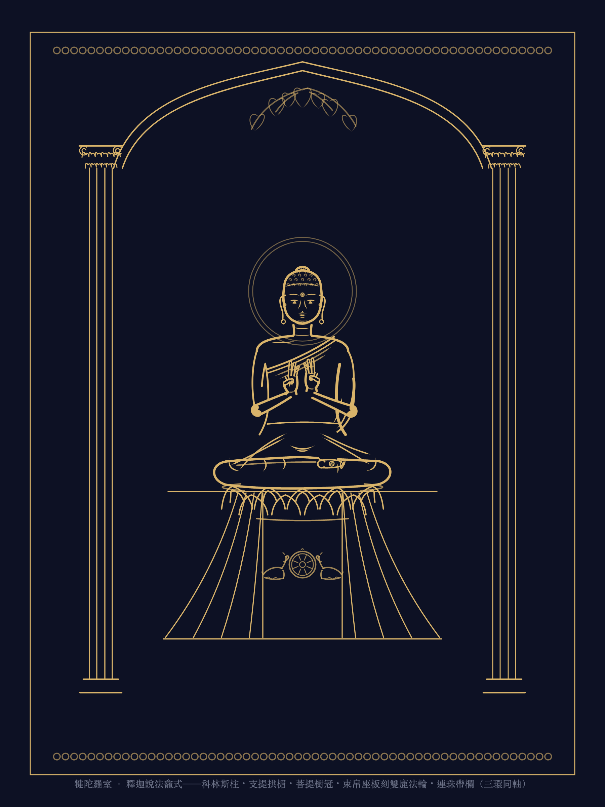

釋迦說法龕shaka · 漢傳側 · 犍陀羅室 · 貴霜片岩式
信級 已核品狀 上壇
觀看提示
- 通肩厚袍作懸鏈 U 弧，褶谷疏密隨胸臂轉折。
- 素圈頭光、支提拱楣、菩提樹冠三環同軸。
- 主尊＞立脅侍＞跪供養，位階即尺度。
研讀 · 所據與量度
所據
總設計 · 犍陀羅室；V&A O63825（素光、覆帛座與深褶）；Met 38118（說法圖右侍執金剛）；Penn Museum 29-64-239（連珠分場）。
表法景物
- 雙鹿法輪 · 初轉
- 菩提樹冠 · 成道
- 獅座 · 說法無畏
- 執金剛 · 常隨護法
- 科林斯柱 · 分龕成境
格網關係
120 指佛格；並觀取白毫 12、頦 20、臍 48、座面 68 同高。龕柱與座基外擴，尊身錨點不移。
量度是律，風格是貌